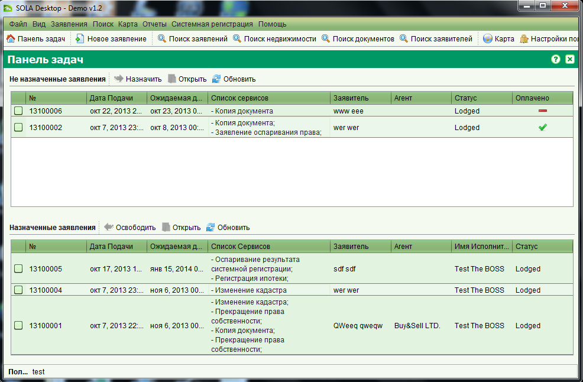
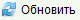

Панель задач и главное меню
После успешной авторизации вы попадете на главное окно приложения где по умолчанию
будет открыта панель задач, на которой отображаются заявления назначенные вам на исполнения,
а также неназначенные заявления.

При помощи главного меню и панели инструментов, вы можете производить следующие действия:
-
Выйти из приложения (Файл > Выход)
-
Экспортировать различные типы прав во внешний файл (Файл > Экспортировать права)
-
Изменить язык (Вид > Язык)
-
Установить уровень журналирования (Вид > Уровень журналирования)
-
Открыть панель задач (
 Панель задач)
Панель задач)
-
Создать новое заявление (Заявление > Новое заявление
или
 )
)
-
Осуществлять поиск существующих заявлений (Поиск > Поиск заявлений или
 Поиск заявлений)
Поиск заявлений)
-
Осуществлять поиск объектов недвижимого имущества (Поиск > Поиск недвижимости или
Поиск недвижимости)
-
Осуществлять поиск документов (Поиск > Поиск документов или
Поиск документов)
-
Осуществлять поиск заявителей и создавать новых ( Поиск заявителей)
-
Открывать просмотрщика карт (Карта > Карта или
 Карта)
Карта)
-
Открывать формы системной регистрации (меню Системная регистрация)
-
Просматривать диалог о SOLA Desktop (Помощь > О программе)
-
Открывать профиль пользователя и изменять свой пароль (
 Настройки пользователя)
Настройки пользователя)
-
Открыть справку SOLA Desktop (Помощь > Справка SOLA Desktop)
-
Просматривать отчет по заявлениям (Отчеты > Отчет по заявлениям)
-
Выбирать и назначать заявления на исполнение ( или через правый щелчок на выбранных заявлениях)
-
Редактировать заявления (
 или через правый щелчок на выбранном заявлении)
или через правый щелчок на выбранном заявлении)
-
Выбирать и снимать с исполнения заявления ( или через правый щелчок на выбранных заявлениях)
-
Обновлять список заявлений ( или через правый щелчок на списке заявлений)
Смотрите также: